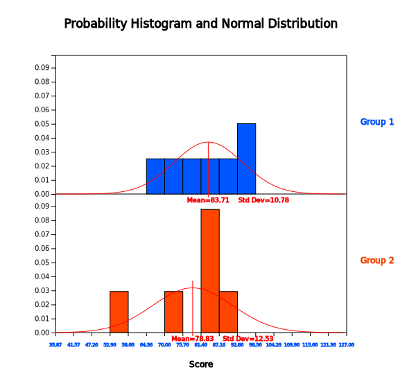

The testing hypothesis for the two population means in Chapter 8 used the t-distribution in case of a small
sample, if each population could be assumed to be a normal distribution. However, the assumption that the
population follows a normal distribution may not be appropriate for real world data, or that there may not be
enough sample data to assume a normal distribution. Alternatively, if data collected may be ordinal such as
ranking, then the parametric t-test is not appropriate. In such cases, a nonparametric method is used to test
parameters by converting data to ranks without assuming the distribution of the population. This section
introduces the Wilcoxon rank sum test.
Nonparametric tests convert data into ranks, so there may be some loss of information about the data.
Therefore, if data are normally distributed, there is no reason to apply a nonparametric test. However, a
nonparametric method would be a more appropriate method if the data do not follow a normal distribution.
As in Chapter 8, this section introduces nonparametric tests for testing location parameters of two
populations for the samples drawn independently from each population and for the samples drawn as paired.
10.2.1 Independent Samples: Wilcoxon Rank Sum Test
Let's take a look at the Wilcoxon rank sum test with the following example.
Example 10.2.1
A professor of a university teaches the Statistics courses to students in the Department of Economics
and the Department of Management. In order to compare exam scores of students in the two departments,
seven students were randomly sampled from the Economics Department and six students from the Management Department and their scores were as follows:
Department of Economics 87 75 65 95 90 81 93
Department of Management 57 85 90 83 87 71
[Ex] ⇨ eBook ⇨ EX100201_ScoreByDepartment.csv
1) Draw a histogram of the data to verify that the testing hypothesis can be performed using a parametric method.
2) Apply the Wilcoxon rank sum test with the significance level of 5%.
3) Check the result of the Wilcoxon rank sum test using『eStat』.
Answer
1) The hypothesis of this problem to test two population means and are as follows:
Since the sample sizes, \(n_1\) = 7 and \(n_2\) = 6, are small from each population,
it is necessary to assume that the populations are normally distributed in order
to apply the parametric \(t\)-test. In order to check whether each sample data follows
a normal distribution, let us draw a histogram using 『eStat』. Enter data in 『eStat』
as shown in <Figure 10.2.1>.
<Figure 10.2.1> Data input at『eStat』
Click icon for testing two population means in the main menu. Select ‘Score’ as 'Analysis Var'
and ‘Dept’ as ‘By Group’ variable. Then, two dot graphs together with 95% confidence intervals
for each population mean will appear as in <Figure 10.2.2>. Average score of students in
the Economics Department appears to be higher than the average score of students in the Management
Department, but it should be tested for statistical significance. Pressing the [Histogram] button
in the options window below the graph will reveal the histogram and normal distribution curves
for each department, as in<Figure 10.2.3>.
<Figure 10.2.2> Dot graph and confidence interval by department

<Figure 10.2.3> Histogram by department
2) Looking at the histogram, the small number of data is not sufficient to assume that the population
follows a normal distribution. In such case, applying the parametric t-test may lead to error.
In case of a nonparametric test, we test the location parameter of the population such as median
which is not so sensitive to extreme values. The hypothesis for this problem is to test whether
the median values \(\small M_1\) and \(\small M_2\) of the two populations are equal or not as follows:
The Wilcoxon rank sum test calculates ranks of each data by combining two samples first and
then calculate the sum of ranks in each sample. If there is a tie, then the averaged rank shall be used. To obtain the ranks of the combined sample, it is convenient to arrange each sample data in ascending
order as shown in Table 10.2.1. The sum of ranks \(\small R_1\) and \(\small R_2\) in each sample will
be used as the test statistic for the Wilcoxon rank sum test.
Table 10.2.1 A table to calculate ranks in a combined sample
Sorted Data of Sample 1
Sorted Data of Sample 2
Ranks of Sample 1
Ranks of Sample 2
57
1
65
2
71
3
75
4
81
5
83
6
85
7
87
87
8.5
8.5
90
90
10.5
10.5
93
12
95
13
Sum of ranks
\(\small R_{1}=55\)
\(\small R_{2}=36\)
The sum of all ranks is 1 + 2 + \(\cdots\) + 13 = \(\frac{13(13+1)}{2}\) = 91. The sum of ranks
in sample 1 is \(\small R_{1}\) = 55 and the sum of ranks in sample 2 is \(\small R_{2}\) = 36.
Note that \(\small R_{1}\) + \(\small R_{2}\) = 91. If \(\small R_{1}\) and \(\small R_{2}\) are similar,
the null hypothesis that two population medians are the same is accepted. In this example
\(\small R_{1}\) is larger than \(\small R_{2}\) and it seems the median of the population 1 is larger
than the median of the population 2. But how much difference in the rank sum would be statistically
significant if you consider the sample sizes?
To investigate how large a difference in the rank sum is statistically significant when the null
hypothesis is true, the distribution of the random variable \(\small R_{2}\) = 'Rank sum of sample 2'
(or \(\small R_{1}\) = 'Rank sum of sample 1') should be known. If \(\small H_0\) is true, the number of cases
for \(\small R_{2}\) is \({}_{13}P_{6}\) = 1716 as shown in Table 10.2.2. It is not easy to examine all of these possible
rankings to find the distribution table. 『eStatU』provides the Wilcoxon rank sum distribution and its table as shown in <Figure 10.2.4>.
Table 10.2.2 All possible ranks for six data in sample 2 if n = 13
All possible permutation of ranks
Sum of ranks, \(R_{2}\)
{1,2,3,4,5,6}
21
{1,2,3,4,5,7}
22
\(\quad \cdots\)
\(\cdots\)
{8,9,10,11,12,13}
63
<Figure 10.2.4> Wilcoxon rank sum distribution when =7, =6
Table 10.2.3 Wilcoxon rank sum distribution when \(n_1 = 7, n_2 = 6\)
Wilcoxon Rank Sum Distribution
n = 10
\(x\)
\(P(X = x)\)
\(P(X \le x)\)
\(P(X \ge x)\)
21
0.0006
0.0006
1
22
0.0006
0.0012
0.9994
23
0.0012
0.0023
0.9988
24
0.0017
0.0041
0.9977
25
0.0029
0.007
0.9959
26
0.0041
0.0111
0.993
27
0.0064
0.0175
0.9889
28
0.0082
0.0256
0.9825
29
0.0111
0.0367
0.9744
\(\cdots\)
\(\cdots\)
\(\cdots\)
\(\cdots\)
55
0.0111
0.9744
0.0367
56
0.0082
0.9825
0.0256
57
0.0064
0.9889
0.0175
58
0.0041
0.993
0.0111
59
0.0029
0.9959
0.007
60
0.0017
0.9977
0.0041
61
0.0012
0.9988
0.0023
62
0.0006
0.9994
0.0012
63
0.0006
1
0.0006
Since the hypothesis requires a two sided test with the significance level of 5%,
so if you find a 2.5 percentile at both ends, \(\small P(X \le 28) = 0.0256, P(X \ge 56)\) = 0.0256.
Since it is a discrete distribution, there is no exact value of the 2.5 percentile.
Therefore, the decision rule can be set as follows:
\(\quad \small \)‘If \(\small R_2 \le\) 27.5 or \(\small R_2 \ge\) 56.5, then reject \(\small H_0 \)’
In this problem \(\small R_2\) = 36, and therefore, we can not reject \(\small H_0\) which means
the difference between \(\small R_1\) and \(\small R_2\) is not statistically significant.
3) In『eStatU』, enter the data as <Figure 10.2.5> and click the [Execute] button.
It will calculate the sample statistics and show the test result graph as <Figure 10.2.6>.
The two critical lines which correspond to 2.5% from the end are shown here. For a discrete
distribution such as this, the choice of the final rejection region should be determined
by the analyst.
<Figure 10.2.5> Data input for the Wilcoxon rank sum test at『eStatU』
<Figure 10.2.6> Wilcoxon rank sum test using 『eStatU』
The rank sum test can be performed using『eStat』. After you saw <Figure 10.2.2>,
click the [Wilcoxon Rank Sum Test] button in the options window below the graph.
Then a test result graph as shown in <Figure 10.2.6> will appear in the Graph Area
and a test result table as in <Figure 10.2.7> will appear in the Log Area.
<Figure 10.2.7> Result table of Wilcoxon rank sum test
Let's generalize the Wilcoxon rank sum test described in [Example 10.2.1]. Denote random samples selected
independently from each of the two populations as follows. The sample sizes are \(n_1\) and \(n_1\)
respectively, and \(n = n_1 + n_2\).
For convenience, assume \(n_1 \ge n_2\). If \(n_1 < n_2\), you can swap between \(X\) and \(Y\) .
The statistical model of the Wilcoxon rank sum test is as follows:
$$
\begin{align}
X_i &= M_1 + \epsilon_i & i=1,2, ... , n_i\\
Y_j &= M_1 + \Delta + \epsilon_j & j=1,2, ... , n_j \\
\end{align}
$$
\(Y_j\) can also be written as \(Y_j = M_2 + \epsilon_j\) where \(M_2 = M_1 +\Delta \).
Here \(\Delta\) is the difference between location parameters. \(\epsilon_i\)’s are independent and
follow the same continuous distribution which is symmetric about 0.
The test statistic for the Wilcoxon rank sum test is the sum of ranks, \(R_2\), for \(Y_1 , Y_2, ... , Y_{n_2}\)
based on the combined sample of \(X_1 , X_2, ... , X_{n_1}\),\(Y_1 , Y_2, ... , Y_{n_2}\). The distribution
of the random variable \(R_2\) = ‘Sum of the ranks for \(Y\) sample’ can be obtained by investigating
all possible cases of ranks for \(Y\) which is \({}_{n}P_{n_2}\) and is denoted as \(w_{2}(n_{1},n_{2})\).
『eStatU』 provides the Wilcoxon rank sum distribution \(w_{2}(n_{1},n_{2})\) and its table up to \(n\) = 25.
\(w_{2}(n_{1},n_{2})_{α}\) denotes the right tail 100\(\times α\) percentile, but it might not
be able to find the accurate percentile, because \(w_{2}(n_{1},n_{2})\) is a discrete distribution.
In this case, middle value of two percentiles near \(w_{2}(n_{1},n_{2})_{α}\) is often used as
an approximation. Table 10.2.4 summarizes the decision rule for each type of hypothesis.
Table 10.2.4 Wilcoxon rank sum test
Type of Hypothesis
Decision Rule Test Statistic \(R_{2}\)= 'Sum of ranks assigned samples of \(Y\)'
1) \( \; H_0 : M = M_0 \) \(\quad\,\, H_1 : M > M_0 \)
If \( R_{2} > w_{2}(n_1 , n_2)_{α} \), then reject \( H_0 \)
2) \( \; H_0 : M = M_0 \) \(\quad\,\, H_1 : M < M_0 \)
If \( R_{2} < w_{2}(n_1 , n_2)_{1-α} \), then reject \( H_0 \)
3) \( \; H_0 : M = M_0 \) \(\quad\,\, H_1 : M \ne M_0 \)
If \( R_{2} < w_{2}(n_1 , n_2)_{1-α/2} \quad or\quad R_{2} > w_{2}(n_1 , n_2)_{α/2} \), then reject \( H_0 \)
☞ If there is a tie in the combined sample, assign the average rank.
Practice 10.2.1
A company wants to compare two methods of obtaining information about a new product. Among company employees,
17 employees were randomly selected and divided into two groups. The first group learned about the new product
by the method A, and the second group learned by the method B. At the end of the experiment, the employees
took a test to measure their knowledge of the new product and their test scores are as follows:
Method A: 50 59 60 71 80 78 72 77 73
Method B: 52 54 58 78 65 61 60 72
[Ex] ⇨ eBook ⇨ PR100201_ScoreByMethod.csv
1) Can we apply a parametric test to conclude that population means of the two groups are different?
2) Apply a nonparmetric test to conclude that the median values of the two groups are different. Test with the significance level of 0.05.
When the null hypothesis is true, if the sample is large enough, the test statistic is approximated to the
normal distribution with the following mean \(E(R_2 )\) and variance \(V(R_2 )\):
$$
\begin{align}
E(R_2 ) &= \frac {n_2 (n_1 + n_2 +1 ) } {2} \\
V(R_2 ) &= \frac {n_1 n_2 (n_1 + n_2 +1)} {12}
\end{align}
$$
Table 10.2.5 summarizes the decision rule for each hypothesis type of the Wilcoxon rank sum test if the
sample is large enough.
Table 10.2.5 Wilcoxon rank sum test (large sample case)
Type of Hypothesis
Decision Rule Test Statistic \(R_{2}\)= 'Sum of ranks assigned samples of \(Y\)'
1) \( \; H_0 : M = M_0 \) \(\quad\,\, H_1 : M > M_0 \)
If \( \frac{ R_{2} - E(R_{2}) } {\sqrt{V(R_{2})}} > z)_{α} \), then reject \( H_0 \)
2) \( \; H_0 : M = M_0 \) \(\quad\,\, H_1 : M < M_0 \)
If \( \frac{ R_{2} - E(R_{2}) } {\sqrt{V(R_{2})}} < z_{1-α} \), then reject \( H_0 \)
3) \( \; H_0 : M = M_0 \) \(\quad\,\, H_1 : M \ne M_0 \)
If \( \left | \frac{ R_{2} - E(R_{2}) } {\sqrt{V(R_{2})}} \right | > z_{α/2} \), then reject \( H_0 \)
The distribution of rank sum statistic, \(w_{2}(n_{1},n_{2})\), is not dependent on the population
distribution. That is, the rank sum test is a distribution free test. For example, if \(n_1\) = 3 and
\(n_2\) = 2, the distribution \(w_{2}(3, 2)\) can be found as follows. All possible cases of ranks for
\(R_2\) is \({}_{5}P_{2}\) = 10.
All possible ranks for combined sample
Value of \(R_2\)
\(X_1\)
\(X_2\)
\(X_3\)
\(Y_1\)
\(Y_2\)
3
4
5
1
2
3
2
4
5
1
3
4
2
3
5
1
4
5
2
3
4
1
5
6
1
4
5
2
3
5
1
3
5
2
4
6
1
3
4
2
5
7
1
2
5
3
4
7
1
2
4
3
5
8
1
2
3
4
5
9
Therefore, the distribution \(w_{2}(3, 2)\) is given regardless of the population distribution as follows:
\(R_{2} = x\)
\(P(R_{2} = x)\)
3
\(\frac{1}{10}\)
4
\(\frac{1}{10}\)
5
\(\frac{2}{10}\)
6
\(\frac{2}{10}\)
7
\(\frac{2}{10}\)
8
\(\frac{1}{10}\)
9
\(\frac{1}{10}\)
If there is a tie in the combined sample, the average rank is assigned to each data. In this case, the
variance of \(R_2\) should be modified in case of large sample as follows:
$$
V(R_2 ) = \frac{n_1 n_2} {12} \left[n_1 + n_2 + 1 - \frac{ \sum_{j=1}^{g} {t}_{j} ({t}_{j}-1)({t}_{j}+1) } {(n_1 + n_2 ) (n_1 + n_2 - 1) } \right]
$$
Here \(g\) = (number of tied groups), \(g\) = (size of \(j^{th}\) tie group, i.e., number of observations
in the tie group). If there is no tie, size of \(j^{th}\) tie group is 1 and \(t_j\) = 1.